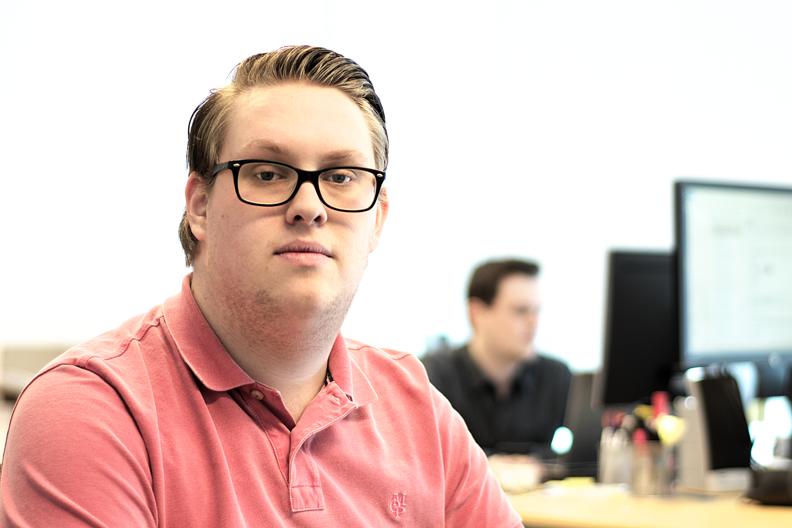

Over mij:
Mijn naam is Duncan Arbman ik ben Geboren op 10 september 1997 in Rotterdam en woon nu in Miinsherenland.
Ik hou me graag bezig met gamen en het luisteren van muziek, ook maak ik graag muziek en heb ik 7 jaar op drummen gezeten. Op zondag kijk ik graag naar voetbal en is mijn club Feyenoord.
Studies:
Ik heb de opleiding medewerker beheer ict gevolgd (niv3) op het Techniek college in Schiedam.
Nu volg ik de opleiding applicatieontwikkeling (niv4) op het Da Vinci College in Dordrecht.
Kennis en vaardigheden:
ik ben ik erg sociaal aangelecht ik kan goed met mensen praten en kan snel een band met mensen op bouwen. ook ben ik erg muziekaal. door mijn vorige opleiding heb ik ook aardig wat kennis van hardware/software. Ook zou ik graag meer kennis willen opdoen over het ontwikkelen van applicaties
Werk ervaring:
Ik heb stage gelopen bij Bytesnet Rotterdam dat is een datacenter. Daar heb ik veel geleerd en het heeft mij erg geholpen met het kennis op bouwen over servers en hoe het allemaal in zijn werking gaat.